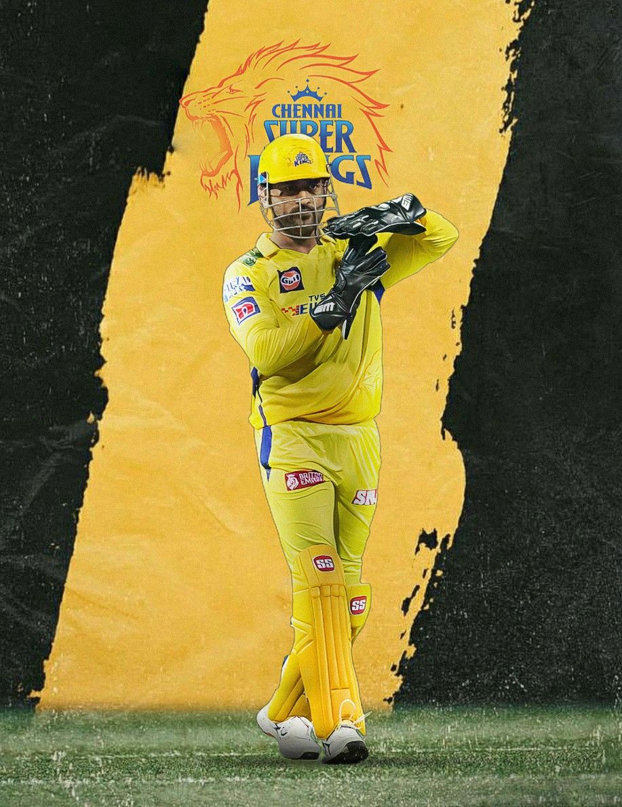

Mahi 💖
Mahendra Singh Dhoni, also known as "MS Dhoni," is a former Indian cricketer and captain of the Indian national cricket team. He was born on July 7, 1981, in Ranchi, India.
Dhoni started his cricketing career as a wicket-keeper-batsman and soon became one of the most successful cricketers in the world. He led the Indian cricket team to many victories, including the 2007 ICC World Twenty20, the 2010 and 2016 Asia Cups, and the 2011 ICC Cricket World Cup.
Dhoni is also known for his calm demeanor and quick decision-making abilities, earning him the nickname "Captain Cool." After retiring from international cricket in 2020, Dhoni continues to play in the Indian Premier League and is widely regarded as one of India's greatest cricketers of all time.
Achievments
During Captaincy
Under his leadership, the Indian cricket team achieved several milestones, including winning the ICC T20 World Cup in 2007, the ICC Cricket World Cup in 2011, and the ICC Champions Trophy in 2013.
Dhoni is also known for his exceptional skills as a wicketkeeper-batsman and has scored over 10,000 runs in One Day Internationals (ODIs).
He has received numerous awards for his contributions to cricket, including the Rajiv Gandhi Khel Ratna, India's highest sporting honor, and the Padma Shri and Padma Bhushan, two of India's highest civilian honors.
Gallery


Read more about MS DHONI on Wikipedia.
This is just for my project purpose not for degrading any other players.
Thanks for the support guys
By PRITAM GARAI